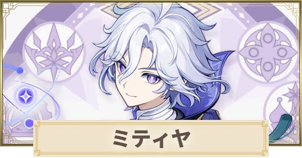
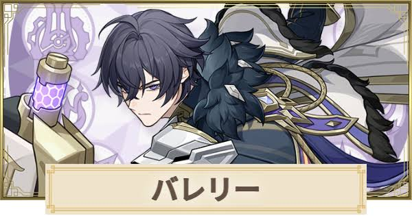
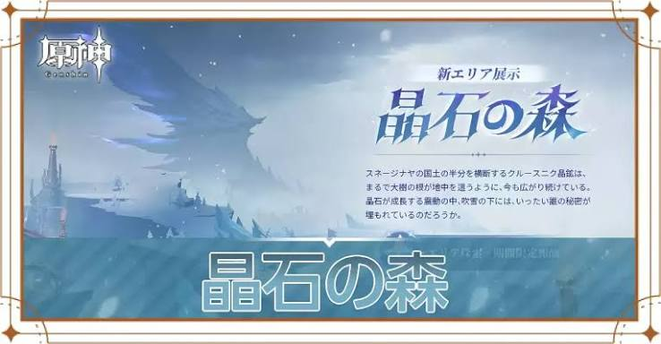
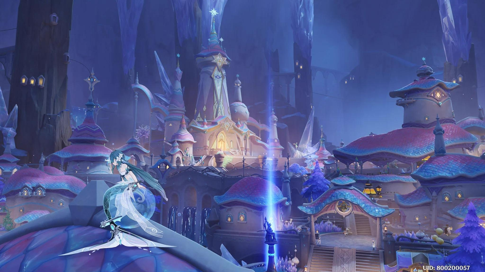

現在:v7.2 魔人任務(YYYY年MM月DD日時点)
・第七章 第五幕「終焉へ墜ちる時」
・第七章 第六幕「彼岸より届けられし昨日」
v7.2 アップデート情報
アップデート日 : 2026年11月04日
新キャラクターとして
ミティヤ
(星５)と
バレリー
(星４)が追加されました。
前半はミティヤとフリーナ(復刻)です。
後半は茲白とリンネアでどちらも復刻です。
星四枠はバレリー、ロサリア、シャルロット
新キャラ性能は新キャラ解説で解説しています。


集録祈願 ナタ祈願
今回は集録祈願が追加されており、ナタキャラがPU対象です。
集録されているキャラは「ムアラニ」「キィニチ」「シロネン」「チャスカ」「ヴァレサ」です。
集録されているキャラの餅武器も同時PUです。
新規追加マップ
新規追加マップとして「晶石の森」と「ノヴォキッチェヴ」が追加されました。詳細は新マップ解説で解説しています。

